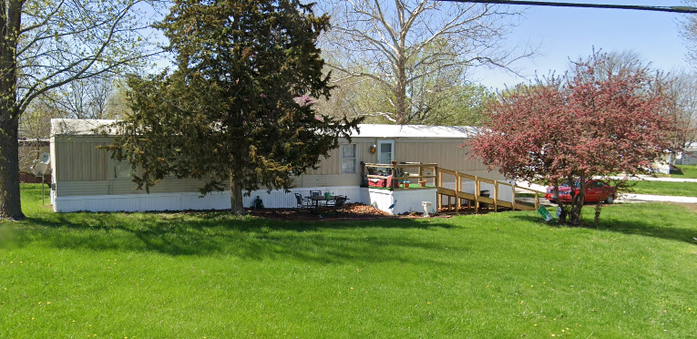

REAL-LIFE UX
ForColumbia 2021 Project: Ms. Ida’s Home
ROLE: Lead
UX is often associated with digital interfaces, but it applies to all real-world circumstances. In this real-world project I utilized UX concepts to ensure a successful ForColumbia project.
ForColumbia is a city-wide annual ministry project focused on serving in-need individuals, groups, and organizations with single-day projects. In 2021, I was the site leader for Ms. Ida’s home. As a site leader, I had to assess the needs and projects for the site, acquire supplies, and lead volunteer workers in projects on the day of work.
-

Empathize
Assigned projects for Ms. Ida’s home were fixing a secondary shower, patching holes in the wall, cleaning up the property, and doing small landscaping projects. I visited Ms. Ida to assess her issues, the work, and the supplies needed.
UX design understands that the greatest need for the user is not always the initially presented problem. Good UX requires user observation and empathy to understand the root cause or more critical issues. Ms. Ida had informed ForColumbia of her needs, but often what the “user” says is a need is not always their greatest need.
I looked over Ms. Ida's property, inside her home, and walked around talking with her about what would happen the day of work and listening about her life and needs. In the process of empathy, I was able to see and define her greatest need.

Define
As I talked with Ms. Ida outside her home, I noticed she had difficulties walking up the ramp onto her front deck. Ms. Ida had health issues, was living with lung cancer, and occasionally needed to use a walker. Her son had built a ramp for her, but its angle was steep, unsafe, and made for difficult walker use.
I realized that a secondary shower was not her greatest need. Her need was an ADA-rated ramp. I confirmed with ForColumbia and Ms. Ida the better plan. Ms. Ida really loved the idea of a ramp that would give her better affordances for walking.

Ideate & Prototype
I researched the ADA recommendations for ramps and drew up a prototype (wireframe) implementing the minimum recommended ADA ramp angle. That angle required the ramp to have multiple landings and switchbacks. Such a ramp was not feasible with the layout of her property and short day of work. After calculations and another wireframe, I found we could implement a ramp using minimum ramp angle requirements. Based on the new angle, I made technical drawings of the ramp. I determined the supplies needed and had them ordered and delivered.

Implement & Test
I contacted one of my volunteers, Jeff Carson, to ask if he could lead the ramp project since he was a carpenter. He agreed. Together we determined the needed tools. On the day of ForColumbia 2021, I coordinated with Jeff to ensure he understood my drawings and vision of the project. We modified the design as we encountered issues. Once the new ramp was stable, we had Ms. Ida walk on it. She was appreciative of the ease of use.

Feedback & Iteration
The following February, I was in the hospital recovering from a Radical Cystectomy (removal of my bladder, prostate, lymph nodes, and other associated parts) due to bladder cancer. I noticed a text from Ms. Ida. She was having issues with the ramp. The winter weather had made the ramp slick. I was able to research solutions. A possible solution was utilizing anti-slip strips. I contacted my lead builder, Jeff Carson, and asked if he could go to Ms. Ida’s home and assess the situation and solution. Jeff said that he could and would. I informed Ms. Ida that help was coming. When the winter weather passed, Jeff was able to assess, install the strips, and ask Ms. Ida to test the strip install. We followed up with her when it was wet again and confirmed that the ramp was usable in wet weather.